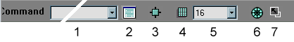

UnrealEd 2 Console
UnrealED 2.0 has a command line box at the bottom of the screen (for the latest version of UEd, see UnrealEd Console). Many of these commands are equivalent to mouse, menu or buttons of the GUI interface, but there are some which are not. Please also see UT Console for other console commands which might apply. The commands below correspond exactly to the #exec commands.

UnreaEd 2 console bar |
I've made a start removing emphasis from commands which have interface equivalents.
Notes
The commands can be entered either upper case or lower case. The list of previously used commands (in the current session) are saved in a drop down list, that can be conveniently re-selected (Click >> Enter), so commonly used commands can be quickly re-activated. Be sure that the correct object is selected before entering command. Also, tool bar buttons can be user created for any of the commands listed here. Many of these commands are seldom used, but can be handy when making large scale systemic alterations to a level (numerous repeat operations).
Commands can be bound to custom toolbar buttons or keys. See binding editor commands. See also UnrealEd interface.
Look for lines in Editor.log that start with "Cmd:" to find out about more possibly interesing console commands.
Actor commands
- ACTOR ADD CLASS=<CLASS>
- add actor of class <class> (eg: CLASS=ASMD). Same as
- ACTOR ALIGN
- aligns the vertices of the selected brushes to the grid. Useful for brushes who do not automatically align such as cylinders or spheres
- ACTOR APPLYTRANSFORM
- applies the transform permanently to selected brushes. (what's the difference between this and BRUSH APPLYTRANSFORM?)
- ACTOR CLIP Z
- In wireframe view it culls brushes that are after a certain distance. The distance being determined by where the Active brush is when it's pressed. Press again to disable. Useful for complex maps.
- ACTOR DELETE
- Deletes any and all currently selected actors.
- ACTOR DUPLICATE
- duplicates currently selected actor
- ACTOR HIDE SELECTED
- hides the currently selected actors / brushes
- ACTOR HIDE UNSELECTED
- hides any actors / brushes that are not currently selected
- ACTOR KEYFRAME NUM=#
- set the current actor to key frame number # (presumably only has an effect on movers?)
- ACTOR MIRROR X
- mirrors the selected actor about the X axis
- ACTOR MIRROR Y
- mirrors the selected actor about the Y axis
- ACTOR MIRROR Z
- mirrors the selected actor about the Z axis
- ACTOR REPLACE BRUSH
- replace selected brush with the builder brush (ie. If you select an added brush and issue this command it will be replaced with another added brush that is the shape of the current builder brush, same for all other brush types) (THIS DOESNT SEEM TO WORK)
- ACTOR REPLACE CLASS=<CLASS>
- replace selected actor with actor of class type <class> (eg: CLASS=ASMD). Doesn't work on brushes and movers. See Brush Hacking for this.
- ACTOR RESET ALL
- resets the Location, Pivot, Rotation and Scale of the selection. See Actor Context Menu.
- ACTOR RESET LOCATION
- resets the selected brush's Location See Actor Context Menu.
- ACTOR RESET PIVOT
- resets the selected brush's Pivot. See Actor Context Menu.
- ACTOR RESET ROTATION
- resets the selected brush's Rotation. See Actor Context Menu.
- ACTOR RESET SCALE
- resets the selected brush's Scale. See Actor Context Menu.
- ACTOR UNHIDE ALL
- shows all actors / brushes that may have been hidden. See Toolbox.
Actor selection commands below...
Brush Commands
- BRUSH ADD
- creates an additive brush
- BRUSH ADDMOVER
- creates a mover brush from red builder brush
- BRUSH APPLYTRANSFORM
- Transform the selected brush permanently. Reduces stack of previous brush operations to one configuration. (Equivalent to transform permanently.)
- BRUSH FROM DEINTERSECTION
- creates new brush from the deintersection operation
- BRUSH FROM INTERSECTION
- creates new brush from the intersection operation
- BRUSH MORE
- ???
- BRUSH SET
- ???
- BRUSH SUBTRACT
- creates a subtractive brush
- BRUSHCLIP
- performs the clipping operation on the selected brush
- BRUSHCLIP DELETE
- deletes the verticies used to perform brush clipping operation
- BRUSHCLIP FLIP
- flips selection arrow denoting what side of brush to clip
- BRUSHCLIP SPLIT
- splits the selected brush along the clipping plane
- MAP BRUSH GET
- copy selected brush to red builder brush.
- MAP BRUSH PUT
- move selected brush to builder brush location and take on shape of builder brush. (how does this compare to ACTOR REPLACE BRUSH?)
- MAP SENDTO FIRST
- send selected brush to the beginning of the bulding process
- MAP SENDTO LAST
- send selected brush to the end of the building process
- PIVOT HERE
- places a pivot a the previously selected grid point
- PIVOT SNAPPED
- snaps pivot to grid
Camera commands
- CAMERA ALIGN
- aligns the camera on the currently selected actors/ brushes
- CAMERA CLOSE FREE
- closes all free viewports or FREE can be substituded for the name of a specific viewport
- CAMERA HIDESTANDARD
- hides all standard viewports
- CAMERA OPEN
- opens a new floating 3D viewport. This can be maximized: very handy if all you can see in a regular viewport is software mode.
- CAMERA UPDATE
- updates viewport
Class Commands
- CLASS LOAD FILE=<FILENAME>
- load class from file
- CLASS NEW
- create new class
- CLASS SPEW ALL
- exports all scripts to your UT folder, folders are created for each class. ALL can replaced with specific class (ie BOTPACK)
- SETCURRENTCLASS CLASS=<CLASS>
- set the current class to <class>
General Commands
- DELETE
- deletes selected actors / brushes
- DUPLICATE
- duplicates selected actors / brushes
- EDIT COPY
- copies selected actors / brushes
- EDIT CUT
- cuts selected actors / brushes
- EDIT PASTE
- pastes selected actors / brushes
- JUMPTO X,Y,Z
- Puts all viewports centered on entered coordinates. Must update view to jump to entered x y z. Used with the Game Console Command -report, which records current player location coordinates to the log file.
- LEVEL LINKS
- update teleporter links
- LEVEL REDRAW
- redraws the level views updating any changes
- LEVEL VALIDATE
- validate the level, find errors (works only for TaoPaiPai)
- LSTATS
- displays lighting stats
- MAP [LOAD/SAVE/IMPORT/EXPORT] FILE=<filename>
- executes the load, save and import commands with the given filename
- MAP NEW
- start new map
- SHOWINV
- toggle the showing of inventory spots
- TRANSACTION REDO
- redo previous action
- TRANSACTION UNDO
- undo previous action
Mode Commands
Note that a number of these modes are either experimental, have been removed from the toolbox interface due to being buggy.
- MODE BRUSHCLIP
- puts editor in brush clipping mode
- MODE BRUSHROTATE
- puts editor in brush rotate mode
- MODE BRUSHSCALE
- puts editor in brush scaling mode
- MODE BRUSHSHEER
- puts editor in [brush sheer]? mode
- MODE BRUSHSNAP
- scales a brush while snapping vertices to the grid.
- MODE BRUSHSTRETCH
- puts editor in brush stretching mode. Seems to be the same as brush scaling but doesn't snap to the grid.
- MODE CAMERAMOVE
- puts editor in camera moving mode
- MODE CAMERAZOOM
- puts editor in camera zoom mode
- MODE FACEDRAG
- puts editor in face drag mode (added with UT patch 432)
- MODE GRID=[1,0]
- turns snap to grid on or off (1 = On, 0 = Off)
- MODE MAPEXT=[1,0]
- No idea!
- MODE ROTGRID=[1,0]
- turns rotational grid on or off (1 = On, 0 = Off)
- MODE SHOWVERTICES=[1,0]
- turns vertices on or off (1 = On, 0 = Off) (does absolutely nothing as far as I can make out)
- MODE SNAPDIST=#
- distance of vertex to grid intersection before snapping to it
- MODE SNAPVERTEX=[1,0]
- turns vertex snap on or off (1 = On, 0 = Off)
- MODE SPEED=#
- movement speed 1,2, or 3
- MODE TEXTURELOCK=[1,0]
- turns texture lock on or off (1 = On, 0 = Off) – If texture lock is on then textures will not be reset on brushes that are vetex manipulated
- MODE TEXTUREPAN
- puts editor in texture pan mode
- MODE TEXTUREROTATE
- puts editor in texture rotate mode
- MODE TEXTURESCALE
- puts edtor in texture scaling mode (I can't get this to do anything!)
Pathing Commands
- PATHS BUILD
- auto create pathnode network - opt=1
- PATHS BUILD HIGHOPT
- auto create pathnode network - opt=2
- PATHS BUILD LOWOPT
- auto create pathnode network - opt=0
- PATHS DEFINE
- create reachspecs
- PATHS HIDE
- hide pathnodes
- PATHS REMOVE
- remove all pathnodes
- PATHS SHOW
- show pathnodes
- PATHS UNDEFINE
- remove all reachspecs
Polygon (surface) Commands
See Selecting Surfaces.
- EDCALLBACK SURFPROPS
- bring up the surface properties of selected poly
- POLY DEFAULT TEXTURE=<PACKAGE.GROUP.TEXTURE>
- sets the default texture in the texture browser
- POLY SELECT ADJACENT ALL
- selects all adjacent polys
- POLY SELECT ADJACENT CEILINGS
- selects all adjacent ceiling polys
- POLY SELECT ADJACENT COPLANARS
- selects all adjacent coplaner polys
- POLY SELECT ADJACENT FLOORS
- selects all adjacent floor polys
- POLY SELECT ADJACENT SLANTS
- selects all adjacent polys on the same slant
- POLY SELECT ADJACENT WALLS
- selects all adjacent wall polys
- POLY SELECT ALL
- selects all polys in the map
- POLY SELECT MATCHING TEXTURE
- selects all matching surfaces that share the same applied texture
- POLY SELECT MEMORY
- selects any polys that have been remembered in memory
- POLY SELECT NONE
- deselect any currently selected poly
- POLY SELECT REVERSE
- inverts the state of selected to unselected or vise versa
- POLY SELECT ZONE
- selects all polys in the current zone
- POLY SET TEXTURE=<PACKAGE.GROUP.TEXTURE>
- sets the poly to the given texture
- POLY SETTEXTURE
- sets the poly to the current selected texture
- POLY TEXALIGN FLOOR
- aligns the textures to the floor plane
- POLY TEXALIGN ONETILE
- aligns textures to one tile fitting
- POLY TEXALIGN WALLCOLUMN
- aligns texture to Wallcolumn
- POLY TEXALIGN WALLDIR
- aligns the textures to the wall plane
- POLY TEXALIGN WALLPAN
- pans out the textures on the wall plane
- POLY TEXINFO
- displays information about the texture like scaling multipliers
- POLY TEXMULT U=# V=#
- ???
- POLY TEXPAN U=# V=#
- pans textures along the U and V axis by the supplied number of units
- POLY TEXSCALE U=# V=# UV=# VU=#
- Scales the texture by numbers entered for U and V and skews the texture for numbers entered for UV and VU script MAKE compile scripts
Rebuild Commands
- BSP REBUILD [LAME/GOOD/OPTIMAL] [BALANCE=0-100] [LIGHTS] [MAPS] [REJECT]
- rebuild BSP with default settings or custom settings in brackets
- LIGHT APPLY
- applies lights in your level
- MAP REBUILD
- rebuild map (geometry/bsp)
Select Commands
- MAP SELECT ADDS
- selects all additive brushes in the map
- MAP SELECT FIRST
- select the first created brush in the level
- MAP SELECT LAST
- select the last created brush in the level
- MAP SELECT NONSOLIDS
- selects all nonsolid brushes in the map
- MAP SELECT SEMISOLIDS
- selects all semisolid brushes in the map
- MAP SELECT SUBTRACTS
- selects all subtractive brushes in the map
- SELECT NONE
- Deselect any and all selected actors (it is a common error to inadvertently select an actor when moving mouse across one of the view screens).
- ACTOR SELECT ALL
- selects all brushes / actors within the map
- ACTOR SELECT DELETED ???
- ACTOR SELECT INSIDE
- selects all brushes / actors within the builder brush
- ACTOR SELECT INVERT
- inverts the state of selected to unselected or vise versa
- ACTOR SELECT NONE
- deselect the selected actors
- ACTOR SELECT OFCLASS CLASS=<CLASS>
- selects all actors of a class
- ACTOR SELECT OFSUBCLASS CLASS=<CLASS>
- selects all actors of a class or subclasses. Eg use with "TournamentWeapon" to select all weapons.
Texture Commands
- TEXTURE APPLYDETAIL
- Apply the "current detail texture" to the texture selected in the texture browser
- TEXTURE BATCHAPPLY DETAIL=[DetailTextureName | None] [PREFIX=TextureNameMatchingPrefix] [OVERRIDE=[TRUE | FALSE]
- Search through all texture packages optionally searching for matches against the "TextureNameMatchingPrefix" for all textures found, apply DetailTextureName as the new detail texture. If a detail texture already exists and OVERRIDE=FALSE, then skip the texture
- TEXTURE CLEAR
- ??? Flashman: I think you'll find this has the same effect as the clear button on the texture properties box, basically it removes all dynamic texture sources from it, i.e. drips, fire etc..
- TEXTURE CLEARDETAIL
- Clear the current detail texture.
- TEXTURE CULL
- Remove Textures references on all non-visible surfaces. See Texture Cull.
- TEXTURE REPLACEDETAIL
- Search through all texture packages for occurrences of detail textures that match the texture currently selected in the texture browser. If a match is found, replace the texture's detail texture with the "current detail texture.
- TEXTURE SCALE DELTA=#
- ???
- TEXTURE SETDETAIL
- Set the "current detail texture" to the current the texture browser selection
Object Commands
- OBJ SAVEPACKAGE PACKAGE=<packagename> FILE=<packagefile> WARN=?
- saves a given package to a specified file.
- OBJ LOAD PACKAGE=<packagename> FILE=<packagefile>
- loads a given package from a specified file. See Embedding Code.
- OBJ EXPORT PACKAGE=? TYPE=<exporter> NAME="objectname" FILE="filepath"
- exports an object, TYPE=OBJECT exports to T3D
- OBJ RENAME OLDPACKAGE= OLDGROUP= OLDNAME= NEWPACKAGE= NEWGROUP= NEWNAME=
- rename/move object
Other Stuff – Please categorize.
- NEW STANDALONE <classname> PACKAGE= FILE= CONTEXTCLASS= CONTEXT= NAME=
- ?
- NEW PUBLIC <classname> PACKAGE= FILE= CONTEXTCLASS= CONTEXT= NAME=
- ?
- NEW PRIVATE <classname> PACKAGE= FILE= CONTEXTCLASS= CONTEXT= NAME=
- ?
- NEW <factoryclass> PACKAGE=<packagename> Name=<newobjectname> [Factory-specific parameters follow]
Used to build objects using a Factory (Editor.ClassFactoryNew, Editor.ClassFactoryUC, Editor.LevelFactory, Editor.LevelFactoryNew, Editor.ModelFactory, Editor.MusicFactory, Editor.PolysFactory, Editor.SoundFactory, Core.TextBufferFactory, Editor.TextureFactory, Editor.FontFactory, Editor.TrueTypeFontFactory, Editor.TextureFactoryNew). This is how the editor imports objects.
Examples:
new ClassFactoryUC Package=MyLevel Name=XXX File=XXX.uc
I don't know if it actually compiles the thing.
The following might be other properties:
- ContextClass
- Context
- Package
- Name
- File
- AUDIO IMPORT FILE=<filename> NAME=<name_of_sound_object> GROUP=<packagegroup>
Imports an audio file into the package of the context in which this command is executed.
In fact, all import commands seem to rely on subclasses of "Factory".
- HOOK ACTORPROPERTIES
- I think it does actor properties.
- LSTAT
- LightMap stats.
- MACRO ???
- Another name for EXEC? Involves a TextBufferFactory.
- TEXTURE IMPORT ALPHATRICK=? NEXT=? MTEX=? DETAIL=? TexFlags=? LODSet=? Mips=?
- MODE VERTEXEDIT
- MODE SELECTIONLOCK=...
- MODE MAPEXT=...
- MODE AFFECTREGION=...
- CAMERA OPEN XR=x YR=y MISC1=? MISC2=? REN=? HWND=?
Mychaeel: Why are some of the commands put in italics?
Tarquin: I was making a start on marking the ones which are available as menus/toolbox buttons etc, as opposed to the ones which are unique here
Mychaeel: Hmmm... I think it'd be better if those commands' explanations simply included directions how to use them via a menu command.
who can say me how to turn off light coronas, cos i've see nothing while lamps in front of me. fanx in advance
Tarquin: probably under Advanced Options in UT
Dark Pulse: That's correct. You can also use a different renderer; I know the Software Renderer has them turned off by default. However, the Software Renderer really, really bites, so just stick with what he said. 
Sudsyman73: i couldn't find it on the polycount page or here, but what is the command for olde UEd2.0 that shows the polycount? it's showed in the log right? or maybe it's the same as the UEd3.0 command? i don't know... i'll go check that one
SabbathCat: The command is "Stat FPS", at least, in Ued 2.0 it is.
BlackHawk: The "NEW <factoryclass>..." seems to be a really powerful command. Only problem is that the exact syntax for the different factories cannot be found anywhere. Can anyone elaborate on this plz?